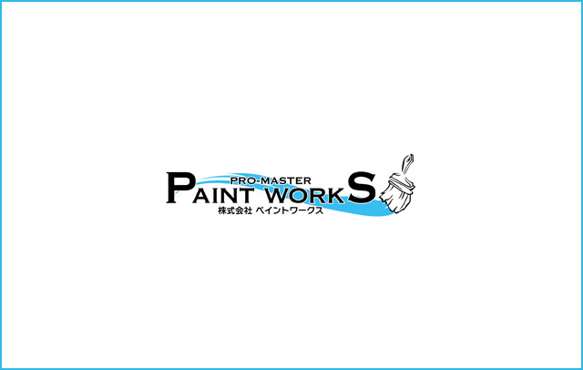
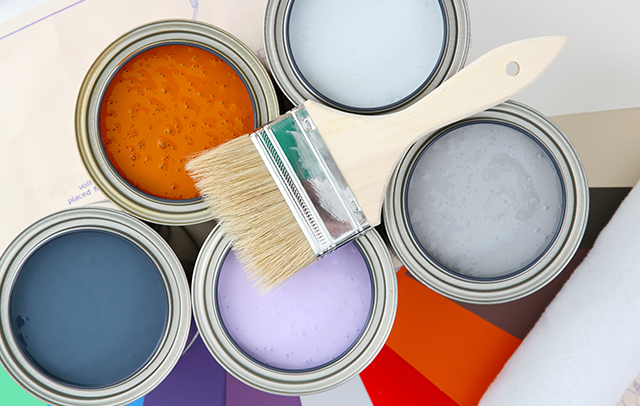
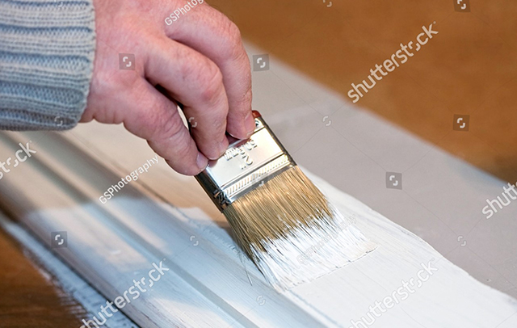

- TOP
- 塗料のご紹介
Recomend
外壁塗装についてよくあるご質問と答え
日野・八王子で外壁塗装を手がけるペイントワークスでは、使用する塗料を厳選しています。だから、塗装面の高品位な仕上がり、美しい発色はもちろん、耐久性や対候性に富み、長持ち。なお、こちらでは、塗料のグレードや機能別に主なものをご紹介します。外壁の塗り替えをご検討中の方はぜひこちらをご参考になさってください。
ペイントワークス
推奨塗料「ガイナ」

ロケットの先端部分にも使われている特殊な断熱技術を応用して開発された「ガイナ」は、断熱性をとくに高めた特殊なセラミックとシリコン樹脂のハイブリッド塗料。大量のセラミック粒子が隙間なく塗装面を覆うことで、遮熱・断熱・防音・結露防止・不燃効果などあらゆる面で優れた性能を発揮します。
ガイナを塗装する主なメリット
| 遮熱・断熱 | ガイナは太陽光に含まれる赤外線を反射します。そのため、赤外線の熱が建物内に侵入しないため、夏場の室温上昇を防ぎます。 |
|---|---|
| 防音 | 細かいセラミック粒子が隙間なく外壁を覆うことで、外部の音を反射し室内への侵入を軽減します。 |
| 結露防止 | ガイナの高い遮熱効果・断熱効果が屋外と室内の温度差を小さくするため、結露の発生を効果的に防ぎます。 |
その他の塗料について

一般に耐久性の高い塗料ほど高く、そうでないものほど安くなります。また、光触媒塗料のように特殊な機能を持つものは相応に高価になります。なお、ペイントワークスが推奨の「ガイナ」は、耐久性・遮熱性・断熱性・防音性などに優れた高機能塗料でありながら、価格は比較的リーズナブルです。
※表は左右にスクロールして確認することができます。
| 塗料 | 耐久年数 | 費用の目安 | 特徴 |
|---|---|---|---|
| ウレタン樹脂 | 7～8年 |
安い
高い |
価格・耐久性・機能性などにおいてバランスのとれた塗料。柔軟性のある材質なので、細部や下地にも適しています。 |
| シリコン樹脂 | 10～12年 | 高品質にも関わらず、価格が高額にならずコストパフォーマンスに優れた塗料。光沢のあるきれいな外観が実現します。 | |
| ナノコンポジット （テクノ塗料） |
10～12年 | 石油系資源の含有量が少ないエコな塗料。汚れがつきにくいため、きれいな外観を長く保つことができます。 | |
| ガイナ （セラミック塗料） |
12～15年 | 断熱に優れた塗料。当社ではもっともイチオシの製品です。 | |
| フッ素塗料 | 12～15年 | 最高級の品質を持つ塗料。耐久性に優れ、長期間塗り変えなくても美しい外観を保つことができます。 | |
| 光触媒 | 12～15年 | 雨水とともに汚れを流す「セルフクリーニング効果」により、メンテナンスの手間がかかりません。 |
塗料選びで大切な
6つのポイント

価格の安価なウレタン塗料から高価な光触媒塗料まで、いくつものグレードがある外壁塗装用塗料。こちらでは、その中からどれを選べばよいか、6つのポイントをご紹介します。
| Point1 予算 |
外壁の塗り替えだけと言っても、ある程度まとまった費用がかかります。全体でどれだけの予算があるかを確認した上で、塗料のグレードを選ぶようにすればムリがありません。 |
|---|---|
| Point2 塗装範囲 |
予算にも関係しますが、外壁だけ塗り替えればよいのか、屋根まで塗り替えるのか、雨どいなどの細かなところまで塗装し直すのかをよく検討し、その上で、予算にムリのない範囲で塗料を選びましょう。 |
| Point3 欲しい機能 |
夏の暑さが気になる、結露を防ぎたい場合は遮熱性や断熱性に富んだ「ガイナ」のような塗料がおすすめ。ガイナなら防音性や防水性にも優れています。 |
| Poin4 カラー |
塗装色をどれにするのか、明度や彩度が高くはっきりした色合いにするのか、シックで落ち着いた色合いにするのか、など、その方向性をよく検討しておきましょう。 |
| Poin5 補修箇所の有無 |
外壁の塗り替えを機に、雨戸や雨どい、防水用コーキングなどに不具合があればぜひ補修し、建物と同色の塗料で塗装しておくとベターです。 |
| Point6 耐久性 |
もっとも安価なウレタン塗料と、もっとも高価な光触媒塗料では耐久性で倍もの開きがあります。高価な塗料で次の塗り替え時期まで長く持たせることはもちろん、耐久年数は短くても価格の安い塗料を選ぶことも可能です。 |